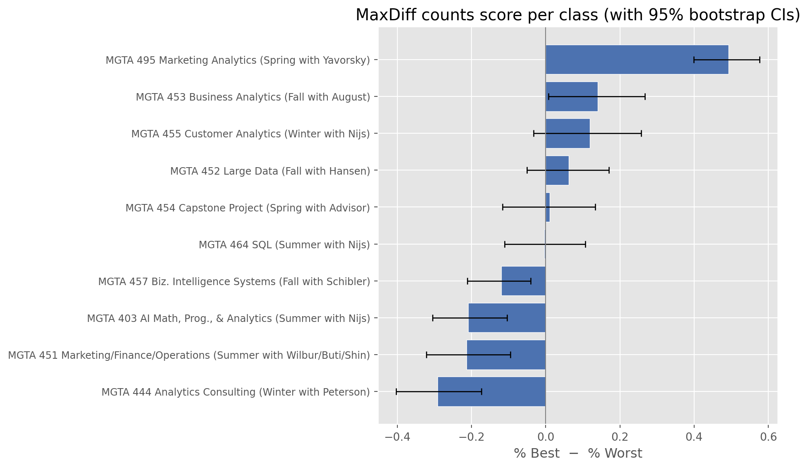
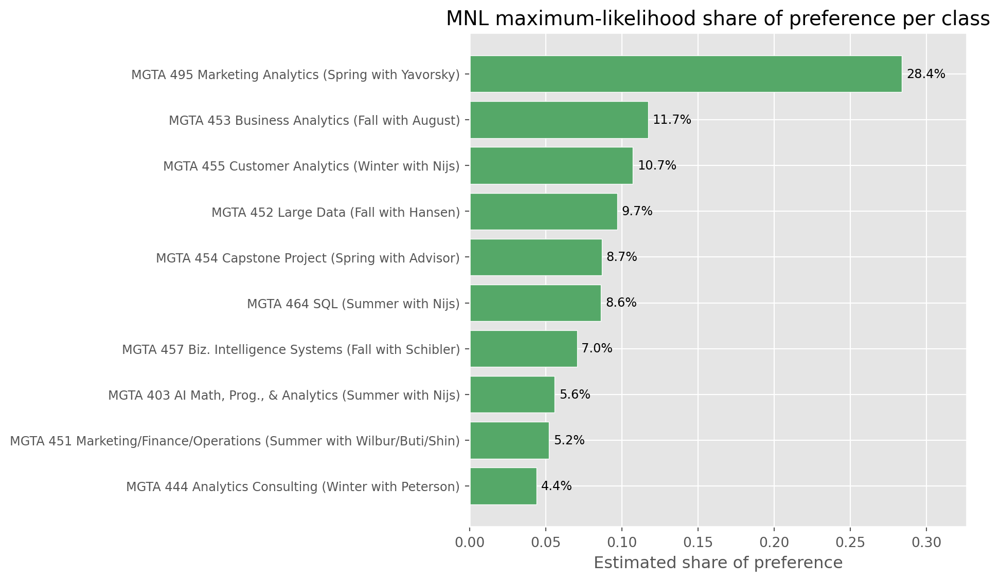
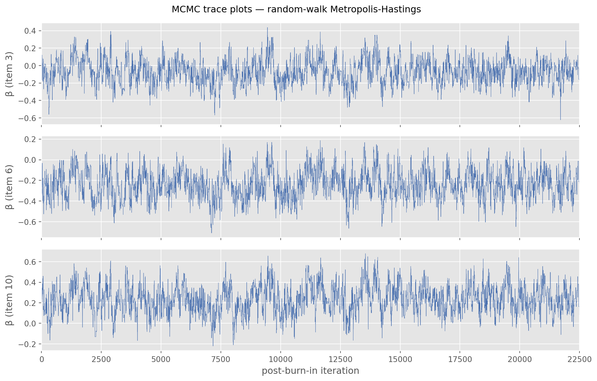
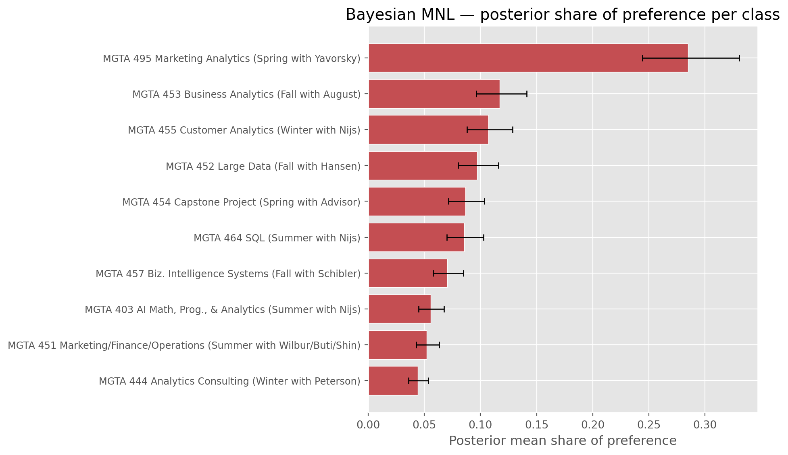
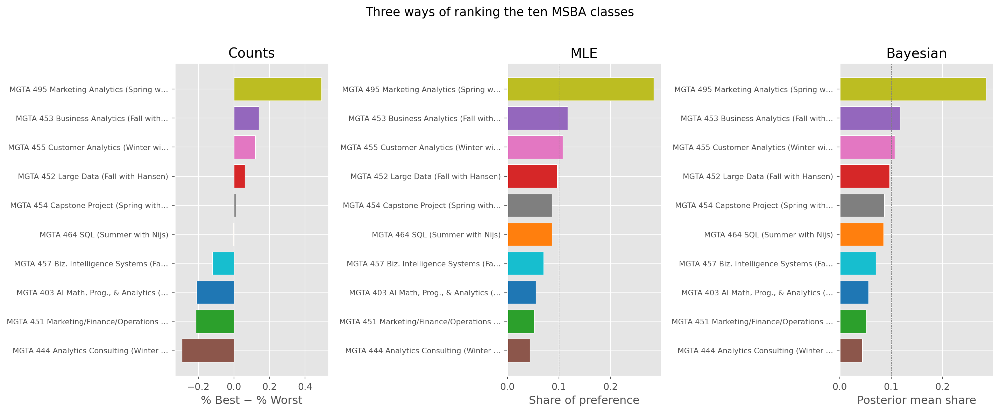

| Quantity | Value |
|---|---|
| Respondents (N) | 85 |
| MaxDiff tasks per respondent (T) | 8 |
| Items shown per task (J) | 4 |
| Total items in study | 10 |
| Total MaxDiff observations (N × T) | 680 |
MaxDiff Analysis of MSBA Class Preferences
Counts, MLE, and Bayesian estimation of the MNL model
Introduction
When we want to learn how much people prefer one thing over another, the natural instinct is to ask them to rate each option on a scale: “How interesting does this class sound, on a scale of 1 to 10?” The trouble is that people use rating scales very differently. One student treats a 7 as faint praise; another treats a 7 as a rave. The numbers look comparable but they aren’t.
MaxDiff, also called Best-Worst Scaling, sidesteps the problem by replacing absolute ratings with forced trade-offs. On each screen the respondent sees a small subset of items — here four of the ten core MSBA classes at UC San Diego Rady — and is asked to pick the most preferred and the least preferred in that set. Humans are much better at making side-by-side comparisons than at calibrating an internal scale, so the resulting data carries a stronger signal about true preference. (See the week-4 MaxDiff deck for a fuller treatment.)
The ten items in this study are the ten core classes in the Rady MSBA program. The goal of the post is to estimate students’ relative preference for each class using three different methods and to see how much they agree:
- A simple counts analysis — for each class, the fraction of times it was picked best minus the fraction of times it was picked worst.
- The multinomial logit (MNL) model fit by maximum likelihood (see week-5 conjoint/MNL deck for the derivation and the
optimrecipe — here we usescipy). - The same MNL model fit by Bayesian methods using a random-walk Metropolis–Hastings sampler (week-7 deck).
We expect all three methods to broadly agree on which classes are most and least preferred. Where they differ is in how they quantify the strength of preference and, more importantly, in how they communicate uncertainty around the estimates.
The Data
The dataset contains 85 respondents, each of whom completed 8 MaxDiff tasks of 4 items each, for a total of 680 task observations across the ten classes.
A sanity check confirms that every task has exactly one best, one worst, and two neither selections — so the data is well-formed (passed: True).
| item | label | Times shown |
|---|---|---|
| 1 | MGTA 403 AI Math, Prog., & Analytics (Summer with Nijs) | 273 |
| 2 | MGTA 464 SQL (Summer with Nijs) | 274 |
| 3 | MGTA 451 Marketing/Finance/Operations (Summer with Wilbur/Buti/Shin) | 272 |
| 4 | MGTA 452 Large Data (Fall with Hansen) | 276 |
| 5 | MGTA 453 Business Analytics (Fall with August) | 270 |
| 6 | MGTA 444 Analytics Consulting (Winter with Peterson) | 267 |
| 7 | MGTA 455 Customer Analytics (Winter with Nijs) | 276 |
| 8 | MGTA 454 Capstone Project (Spring with Advisor) | 272 |
| 9 | MGTA 495 Marketing Analytics (Spring with Yavorsky) | 274 |
| 10 | MGTA 457 Biz. Intelligence Systems (Fall with Schibler) | 266 |
The MaxDiff design is balanced: every class was shown a similar number of times across the study (272 appearances each), which is exactly what we want so that the comparison across classes is fair.
Counts Analysis
The simplest way to summarize MaxDiff data is to count picks. For each item \(j\), compute
\[ \text{score}_j \;=\; \%\text{best}_j \;-\; \%\text{worst}_j, \]
where the percentages are taken out of the number of times the item was shown. A score near \(+1\) means a class is almost always picked best when on screen; near \(-1\) means almost always worst; near \(0\) means it is middle-of-the-pack or polarizing.
| Item | Class | Shown | # Best | # Worst | % Best | % Worst | Score |
|---|---|---|---|---|---|---|---|
| 9 | MGTA 495 Marketing Analytics (Spring with Yavorsky) | 274 | 147 | 12 | 53.6% | 4.4% | +0.493 |
| 5 | MGTA 453 Business Analytics (Fall with August) | 270 | 93 | 55 | 34.4% | 20.4% | +0.141 |
| 7 | MGTA 455 Customer Analytics (Winter with Nijs) | 276 | 104 | 71 | 37.7% | 25.7% | +0.120 |
| 4 | MGTA 452 Large Data (Fall with Hansen) | 276 | 77 | 60 | 27.9% | 21.7% | +0.062 |
| 8 | MGTA 454 Capstone Project (Spring with Advisor) | 272 | 72 | 69 | 26.5% | 25.4% | +0.011 |
| 2 | MGTA 464 SQL (Summer with Nijs) | 274 | 55 | 56 | 20.1% | 20.4% | -0.004 |
| 10 | MGTA 457 Biz. Intelligence Systems (Fall with Schibler) | 266 | 23 | 55 | 8.6% | 20.7% | -0.120 |
| 1 | MGTA 403 AI Math, Prog., & Analytics (Summer with Nijs) | 273 | 33 | 90 | 12.1% | 33.0% | -0.209 |
| 3 | MGTA 451 Marketing/Finance/Operations (Summer with Wilbur/Buti/Shin) | 272 | 43 | 101 | 15.8% | 37.1% | -0.213 |
| 6 | MGTA 444 Analytics Consulting (Winter with Peterson) | 267 | 33 | 111 | 12.4% | 41.6% | -0.292 |

Even at the level of this simple count, the story is clear. MGTA 495 Marketing Analytics has by far the highest counts score: students pick it as best far more often than they pick it as worst. MGTA 455 Customer Analytics and MGTA 453 Business Analytics are also strongly liked. At the bottom, the AI math/programming refresher (MGTA 403) and the Analytics Consulting (MGTA 444) course are picked as worst much more often than as best. The 95% bootstrap intervals on the top class do not overlap with anything in the middle of the table, so its lead is statistically meaningful, not a sampling fluke.
From MaxDiff to MNL Choices
The counts analysis throws away information. It treats a “best” pick the same regardless of what it was competing against on that screen — picking a class as best from a strong set is harder than picking it as best from a weak set. The multinomial logit (MNL) model fixes this by modelling the choice process explicitly.
Assign each item \(j\) a utility coefficient \(\beta_j\). On a task showing items \(\{a, b, c, d\}\), the probability that item \(b\) is picked best is the soft-max,
\[ P(\text{best} = b) \;=\; \frac{\exp(\beta_b)}{\exp(\beta_a) + \exp(\beta_b) + \exp(\beta_c) + \exp(\beta_d)}. \]
The probability that item \(c\) is then picked worst — from the remaining three items with utilities flipped — is
\[ P(\text{worst} = c \mid \text{best} = b) \;=\; \frac{\exp(-\beta_c)}{\exp(-\beta_a) + \exp(-\beta_c) + \exp(-\beta_d)}. \]
Each task therefore contributes two MNL observations, a best-pick from the full set and a worst-pick from the remaining set.
Identifiability. The soft-max is invariant to adding a constant to every \(\beta\), so only \(J - 1 = 9\) of the ten coefficients are identified separately. We fix \(\beta_1 = 0\) (the AI math course is the reference) and estimate \(\beta_2, \dots, \beta_{10}\). All preferences are read relative to this baseline.
MNL via Maximum Likelihood
The full log-likelihood, summed over the 680 tasks, is
\[ \ell(\boldsymbol{\beta}) \;=\; \sum_{\text{tasks}} \Big[\, \beta_{j^*_b} \;-\; \log \!\!\!\sum_{j \in \text{shown}}\!\!\! \exp(\beta_j) \;-\; \beta_{j^*_w} \;-\; \log \!\!\!\!\!\sum_{j \in \text{shown} \setminus \{j^*_b\}}\!\!\!\! \exp(-\beta_j) \,\Big], \]
where \(j^*_b\) and \(j^*_w\) are the items picked best and worst on that task. The log-sum-exp form keeps the numerics stable.
| Rank | Item | Class | β̂ | SE(β̂) | Share |
|---|---|---|---|---|---|
| 1 | 9 | MGTA 495 Marketing Analytics (Spring with Yavorsky) | +1.630 | 0.195 | 28.4% |
| 2 | 5 | MGTA 453 Business Analytics (Fall with August) | +0.744 | 0.222 | 11.7% |
| 3 | 7 | MGTA 455 Customer Analytics (Winter with Nijs) | +0.656 | 0.231 | 10.7% |
| 4 | 4 | MGTA 452 Large Data (Fall with Hansen) | +0.555 | 0.217 | 9.7% |
| 5 | 8 | MGTA 454 Capstone Project (Spring with Advisor) | +0.443 | 0.183 | 8.7% |
| 6 | 2 | MGTA 464 SQL (Summer with Nijs) | +0.438 | 0.182 | 8.6% |
| 7 | 10 | MGTA 457 Biz. Intelligence Systems (Fall with Schibler) | +0.236 | 0.180 | 7.0% |
| 8 | 1 | MGTA 403 AI Math, Prog., & Analytics (Summer with Nijs) | +0.000 | 0.000 | 5.6% |
| 9 | 3 | MGTA 451 Marketing/Finance/Operations (Summer with Wilbur/Buti/Shin) | -0.067 | 0.178 | 5.2% |
| 10 | 6 | MGTA 444 Analytics Consulting (Winter with Peterson) | -0.239 | 0.162 | 4.4% |
The standard errors come from the inverse of the negative Hessian returned by scipy.optimize.minimize. To turn the raw \(\hat\beta\)’s into something interpretable, we convert them to shares of preference via the soft-max,
\[ \hat s_j \;=\; \frac{\exp(\hat\beta_j)}{\sum_{k=1}^{10} \exp(\hat\beta_k)}, \]
which sum to one and answer the natural question: “if all ten classes were on one screen, what fraction of best-picks would each one get?”

The MNL ranking confirms what the counts already suggested: MGTA 495 Marketing Analytics dominates with an estimated share of about 28% of all best-picks if the entire ten-class set were placed on a single screen. MGTA 455 Customer Analytics and MGTA 453 Business Analytics are clear runners-up. The bottom three — MGTA 444 Analytics Consulting, the AI math/programming refresher, and MGTA 451 Marketing / Finance / Operations — sit well below the others. The order is essentially identical to the counts ranking, which is reassuring: the MNL is doing more work statistically, but on data this clean it lands in the same place.
MNL via Bayesian Estimation
The Bayesian recipe is the same likelihood, only now with a prior on the coefficients:
\[ \pi(\boldsymbol{\beta} \mid \boldsymbol{y}) \;\propto\; L(\boldsymbol{\beta}) \cdot \pi(\boldsymbol{\beta}). \]
A weakly informative prior \(\boldsymbol{\beta} \sim N(\mathbf{0},\, 10 \cdot I)\) — a standard deviation of about \(\sqrt{10} \approx 3.2\) on every coefficient — leaves the data to do almost all of the talking while ruling out absurd values.
We sample from the posterior with a random-walk Metropolis-Hastings sampler. Starting from the MLE, we propose \(\boldsymbol{\beta}^\ast = \boldsymbol{\beta} + \boldsymbol{\epsilon}\) with \(\boldsymbol{\epsilon} \sim N(\mathbf{0}, s^2 I)\), accept with probability \(\min\{1, \, \pi(\boldsymbol{\beta}^\ast)/\pi(\boldsymbol{\beta})\}\), and tune the step size \(s\) to land at an acceptance rate of roughly 25–40 % (see the week-7 “Tuning the Step Size” slide).
The chain was run for 30,000 iterations with a step size of 0.10, discarding the first 7,500 as burn-in. The acceptance rate was 19.4%, comfortably inside the recommended band.

The traces look like the canonical “fuzzy caterpillar”: the chain is moving around freely and revisiting the same range repeatedly, not slowly drifting in one direction. That is what we want to see.
| Rank | Item | Class | β̄ | β 2.5% | β 97.5% | Share | Share 2.5% | Share 97.5% |
|---|---|---|---|---|---|---|---|---|
| 1 | 9 | MGTA 495 Marketing Analytics (Spring with Yavorsky) | +1.634 | +1.350 | +1.932 | 28.5% | 24.4% | 33.1% |
| 2 | 5 | MGTA 453 Business Analytics (Fall with August) | +0.742 | +0.463 | +1.025 | 11.7% | 9.6% | 14.1% |
| 3 | 7 | MGTA 455 Customer Analytics (Winter with Nijs) | +0.653 | +0.369 | +0.939 | 10.7% | 8.8% | 12.9% |
| 4 | 4 | MGTA 452 Large Data (Fall with Hansen) | +0.555 | +0.293 | +0.830 | 9.7% | 8.0% | 11.6% |
| 5 | 8 | MGTA 454 Capstone Project (Spring with Advisor) | +0.439 | +0.187 | +0.710 | 8.6% | 7.1% | 10.4% |
| 6 | 2 | MGTA 464 SQL (Summer with Nijs) | +0.426 | +0.159 | +0.686 | 8.5% | 7.0% | 10.3% |
| 7 | 10 | MGTA 457 Biz. Intelligence Systems (Fall with Schibler) | +0.235 | -0.030 | +0.502 | 7.0% | 5.8% | 8.5% |
| 8 | 1 | MGTA 403 AI Math, Prog., & Analytics (Summer with Nijs) | +0.000 | +0.000 | +0.000 | 5.6% | 4.5% | 6.7% |
| 9 | 3 | MGTA 451 Marketing/Finance/Operations (Summer with Wilbur/Buti/Shin) | -0.067 | -0.335 | +0.214 | 5.2% | 4.3% | 6.3% |
| 10 | 6 | MGTA 444 Analytics Consulting (Winter with Peterson) | -0.238 | -0.498 | +0.036 | 4.4% | 3.6% | 5.3% |

The Bayesian estimates land essentially on top of the MLEs: the posterior mean of each \(\beta\) is within a few hundredths of the MLE point estimate, and the posterior standard deviations match the classical standard errors. That is exactly what one should expect under a diffuse prior and a large enough sample — the likelihood dominates the posterior. What the Bayesian fit gives us for free, however, is a proper credible interval on the share of preference: we just push every MCMC draw through the soft-max and take quantiles. Obtaining the same intervals from the MLE would require the delta method.
Comparing the Three Methods
| Item | Class | Counts score | Counts rank | MLE share | MLE rank | Bayes share | Bayes rank |
|---|---|---|---|---|---|---|---|
| 9 | MGTA 495 Marketing Analytics (Spring with Yavorsky) | +0.493 | 1 | 28.4% | 1 | 28.5% | 1 |
| 5 | MGTA 453 Business Analytics (Fall with August) | +0.141 | 2 | 11.7% | 2 | 11.7% | 2 |
| 7 | MGTA 455 Customer Analytics (Winter with Nijs) | +0.120 | 3 | 10.7% | 3 | 10.7% | 3 |
| 4 | MGTA 452 Large Data (Fall with Hansen) | +0.062 | 4 | 9.7% | 4 | 9.7% | 4 |
| 8 | MGTA 454 Capstone Project (Spring with Advisor) | +0.011 | 5 | 8.7% | 5 | 8.6% | 5 |
| 2 | MGTA 464 SQL (Summer with Nijs) | -0.004 | 6 | 8.6% | 6 | 8.5% | 6 |
| 10 | MGTA 457 Biz. Intelligence Systems (Fall with Schibler) | -0.120 | 7 | 7.0% | 7 | 7.0% | 7 |
| 1 | MGTA 403 AI Math, Prog., & Analytics (Summer with Nijs) | -0.209 | 8 | 5.6% | 8 | 5.6% | 8 |
| 3 | MGTA 451 Marketing/Finance/Operations (Summer with Wilbur/Buti/Shin) | -0.213 | 9 | 5.2% | 9 | 5.2% | 9 |
| 6 | MGTA 444 Analytics Consulting (Winter with Peterson) | -0.292 | 10 | 4.4% | 10 | 4.4% | 10 |

The three methods agree completely on the top three and the bottom three. Where they shuffle slightly is in the middle of the pack, where classes have similar utilities and small amounts of sampling noise can swap adjacent positions. This is exactly the regime in which the Bayesian credible interval is most useful: it tells you which of the middle-ranked classes are meaningfully different from one another and which are essentially tied.
What does the MNL add over the counts analysis? The counts treat every best-pick as equally informative, regardless of which items it competed against. The MNL uses the full design — every item that was shown but not picked also contributes information, because it was offered and rejected. That extra information is what lets the model produce interpretable shares of preference instead of just a bounded score.
What does the Bayesian fit add over the MLE? Two things. First, an honest distribution over the derived quantities of interest. Shares of preference, “what fraction of students would choose each class on a single screen”, or pairwise win probabilities are nonlinear functions of the \(\beta\)’s, and quantifying their uncertainty from the MLE requires the delta method or a parametric bootstrap. With MCMC every draw gives you the derived quantity directly. Second, the framework generalises gracefully — a hierarchical MNL with individual-level coefficients is a small change to the same sampler and lets you measure how preferences vary between students.
Discussion
Reading these results as a prospective MSBA student rather than as a modeller: MGTA 495 Marketing Analytics is the clear favourite among the survey respondents. MGTA 455 Customer Analytics and MGTA 453 Business Analytics form a strong second tier. The Capstone and SQL classes sit in the middle — useful courses that no one rates as their absolute favourite but that few rate as their least favourite either. At the bottom are the AI math/programming refresher and the Analytics Consulting course, both picked as worst much more often than as best.
A methodological summary in three lines:
- The counts analysis is the right tool for an executive dashboard — it is transparent, requires no model, and lands on the same broad ranking that the more sophisticated methods produce.
- Maximum-likelihood MNL gives the same ranking but adds principled standard errors and lets you compute shares of preference. It is the default workhorse when you want a single number to report with a classical error bar.
- Bayesian MNL wins when you need uncertainty on derived quantities (shares, market simulations, “what if we added an eleventh class?” scenarios) or when you want to extend the model hierarchically to estimate preferences at the individual level rather than only on average.
A few caveats are worth flagging. The respondents are a self-selected sample of MSBA students — preferences here may not generalise to other analytics programs, or even to future cohorts at Rady. Each respondent saw eight tasks of four items, which gives a clean aggregate picture but is too thin to estimate stable preferences for any individual student. Finally, students’ preferences are partly shaped by their prior coursework and by where they currently are in the program — an obvious next step would be to fit a hierarchical MNL with a student-level effect, or to interact the \(\beta\)’s with covariates such as concentration or work experience to see whether different segments of students prefer different sets of classes.